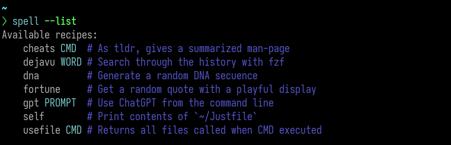
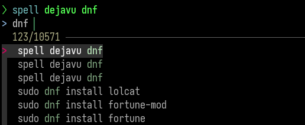
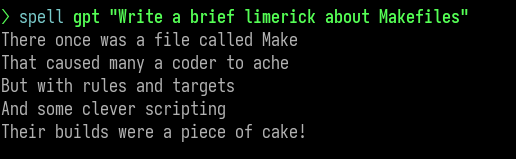
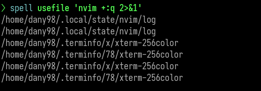
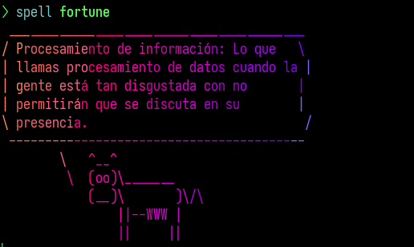

💡 Harness Command-Line Brilliance with Justfile! 🚀¶
Do your genius command-line ideas wander aimlessly without a home? Fear not,
for just is here to save the day! While
tools like make excel at build automation, just takes a different approach
by focusing on human-readable command execution. In this tutorial, we’ll use it
to set up a workflow to effortlessly capture, organize, and execute your
oneliner commands in a clean and concise manner. Let’s embark on this adventure
and bring your command-line brilliance to life! 🌟
Justfile¶
To install just follow the official
instructions.
The easiest way to install it is with gh (the
Github CLI) and its extension
install. Install them and then run
the following to install just at $HOME/.local/bin:
Then add the following lines to your shell config file to create an alias, so
you don’t mess with just if you use if for other projects.
# For Bash at ~/.bashrc
alias spell="just --justfile ~/Justfile"
# For Nushell at ~/.config/nushell/config.nu
alias spell = just --justfile ~/Justfile
Suggested workflow¶
The following is my personal Justfile where I keep my occasional and funny
occurrences. I located it at $HOME/. Also, this example may give a fair idea
of the possibilities of just, as argument handling, optional arguments and
command pipelines. Use it as an inspiration! 🤓
set shell := ["bash", "-c"]
# Print contents of `~/Justfile`
self:
bat --plain -n --language=make ~/Justfile
# Generate a random DNA sequence
dna:
@cat /dev/urandom | tr -dc 'AGCT' | fold -w 32 | head -n 5
# Get a random quote with a playful display
fortune:
@fortune -s | trans --brief en:es \
| tee >(cowsay -f "$(ls /usr/share/cowsay/cows | sort -R | head -1)" | lolcat --random >/dev/tty) \
| espeak -v spanish -k20
# As tldr, gives a summarized man-page
cheats CMD:
@curl -sS cheat.sh/{{CMD}} | bat --style=plain
# Returns all files called when CMD is executed
usefile CMD:
strace {{CMD}} 2>&1 | grep "^openat.*$HOME" | sed 's/.*"\(.*\)".*/\1/'
# Search through the history with fzf
dejavu WORD:
@# @nushell -c "history" -m light | awk '{$1=""}1' \# Replace the below line if you use Nushell
@history | awk '{$1=""; print $0}' | sort | uniq \
| fzf --tac --layout=reverse --height=40% +s -e -q "{{WORD}}"
# Use ChatGPT from the command line
gpt PROMPT:
@podman run --rm \
--env OPENAI_API_KEY="YOUR_PERSONAL_TOKEN" \
--volume gpt-cache:/tmp/shell_gpt ghcr.io/ther1d/shell_gpt "{{PROMPT}}"
In the previous Justfile I’ve used a couple of commands that I encorage you to checkout ✨:
batAcat(1)clone with wingslolcatRainbows and unicorns!fzfA command-line fuzzy finderespeakA speech synthesizerpodmanA daemonless tool to manage containers
Usage¶
One of the best parts of using just is that the comments above each snippet
generates its own documentation :D

Now you’ll have a convenient place where to put all those pilgrim ideas
   
Conclusion¶
Hope you’ve enjoyed this tutorial. For further details the just official docs. Happy scripting!